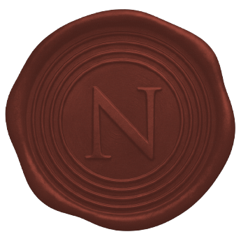

Verdict-form 001 · Refusal Doctrine v0.3.3.1
NOT-CALIBRATED
Synapse v0.3, meta-calibration engine.
Refused across all five gates.
Evaluated 2026-07-01 · Ledger N = 239 predictions · Author: Sebastien Assohou
Verdict scope statement · Doctrine v0.3.3.1 § 9.7
A verdict from Nyalai applies only within the scope stated above. Deployment outside this scope requires a new evaluation. Portfolio construction (weighting, correlation, volatility target, rebalancing cadence) is not validated by the five gates; it is the responsibility of the allocator.
Executive summary
Synapse v0.3 does not deserve to inform capital allocation.
The subject of this Verdict-form is Synapse v0.3, a meta-calibration engine developed by the same author who signs this document. On a documented ledger of 239 resolved predictions submitted to CalibrationJudge on 2026-07-01, Synapse v0.3 fails all five gates specified in the Refusal Doctrine v0.3.3.1.
The Brier Skill Score is negative. Cross-regime robustness collapses across every regime tested. The guided-search safety test does not reject the null hypothesis of overfitting. Calibration error exceeds the accepted threshold. The bootstrap confidence interval on skill lies entirely below zero.
There is no partial passage to negotiate. There is no gate that survives. The refusal is complete.
This is the first published Verdict-form of Nyalai. The choice of subject is deliberate. The author is the same person who built Synapse v0.3, who wrote the Refusal Doctrine, and who signs this refusal. If the discipline is real, it must apply here first. It does.
Five gates · results
Each gate carries the burden of proof.
None was met.
All five gate specifications and thresholds are defined in the Refusal Doctrine v0.3.3.1, published under Creative Commons Zero. Any independent third party can reproduce this evaluation from the same ledger.
Root-cause diagnostic
The failure is not random. It is structural, and traceable.
A refusal is more useful when the author identifies the mechanism of failure. In Synapse v0.3, the empirical signature is a local sign inversion on the sudden_trending_entry subpopulation, with a delta Brier Skill Score of +0.838 in that region only.
The root cause was traced to lines 16–22 of the hypothesis writer prompt, version 0.2. Confidence bands imposed by those lines forced the LLM to systematically underestimate null hypotheses in trending regimes. The engine appeared confident where it should have withheld.
A fix (writer prompt v0.3, injecting the empirical base rate into the writer context) was implemented and passes 315 of 315 tests. A conditional simulation shows a global BSS improvement of +0.035 and a local BSS improvement of +0.338 on the affected subpopulation. The fix is a candidate, not a verdict. A re-run of CalibrationJudge on the fixed writer will be scheduled four to six weeks after this publication.
Until that re-run produces a passing verdict, Synapse v0.3 remains NOT-CALIBRATED. There is no interim status.
Sovereignty rule seven
The party that produces a probabilistic claim never validates the same claim.
Sovereignty rule seven is the core operating constraint of Nyalai. It requires structural separation between the party that constructs a probabilistic system and the party that renders a verdict on it. Without that separation, the verdict is not a verdict. It is a self-report.
The subject of this Verdict-form was built by the same person who signs it. That is a violation of the rule, made public deliberately, because it is the only honest way to bootstrap the institution. If Nyalai will refuse the systems of others, it must refuse its own first, in public, under the same rules.
Every future Verdict-form published by Nyalai will maintain full structural separation. The producer of the subject and the party rendering the verdict will not be the same legal or operational entity. This one is the last exception. It is also the first proof.
Audit trail
Evaluation engine: cice/87c619a
Ledger size: 239 resolved predictions
Evaluated: 2026-07-01
Doctrine version: Refusal Doctrine v0.3.3.1
How to verify
The methodology and all five gate specifications are published under Creative Commons Zero. Any third party can request the ledger to reproduce the evaluation independently.
Requests: [email protected]
Sebastien Assohou
Founder · Nyalai · 2026-07-01
This Verdict-form and its underlying methodology are published under Creative Commons Zero.
A cryptographic hash (SHA-256) and OpenTimestamps proof will be attached upon official publication.